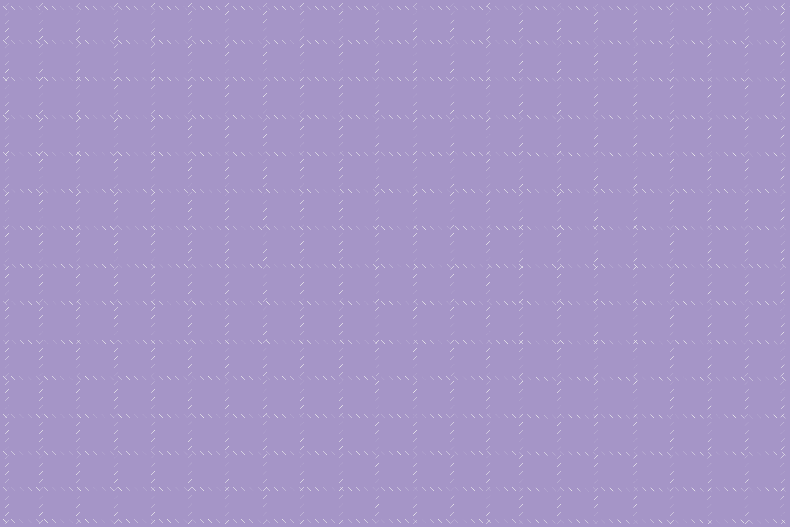
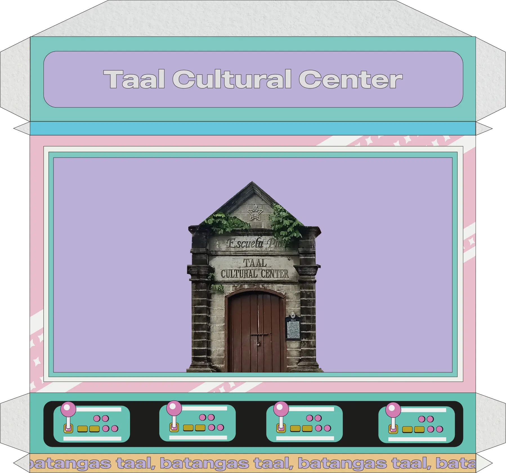
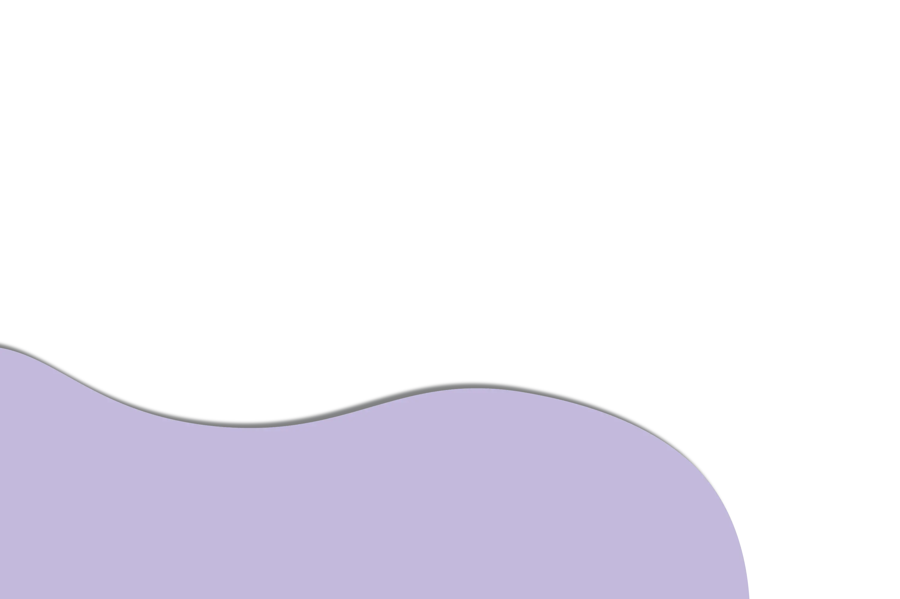
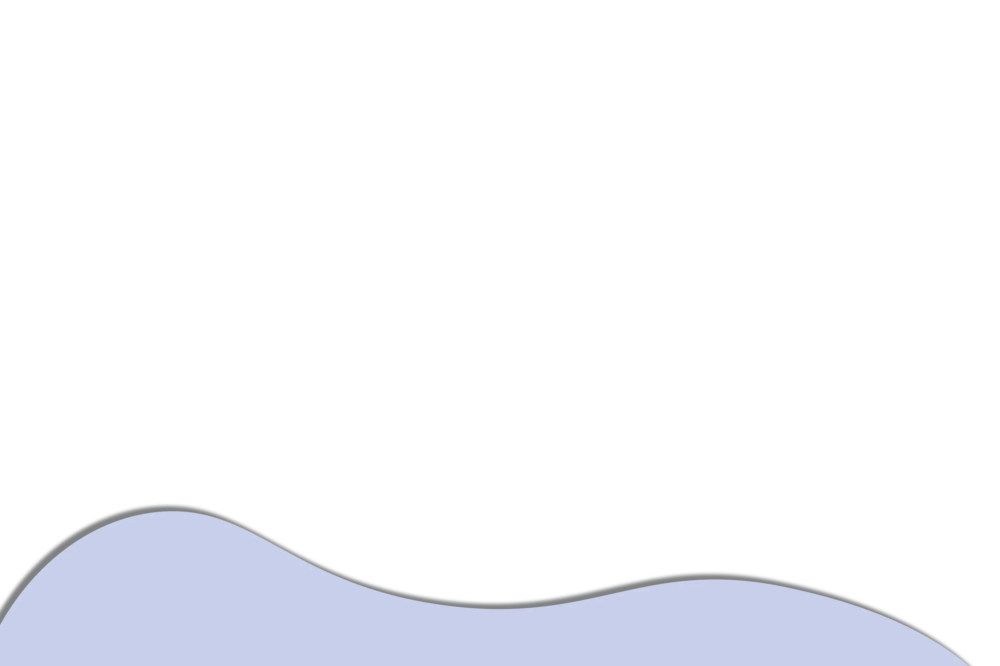
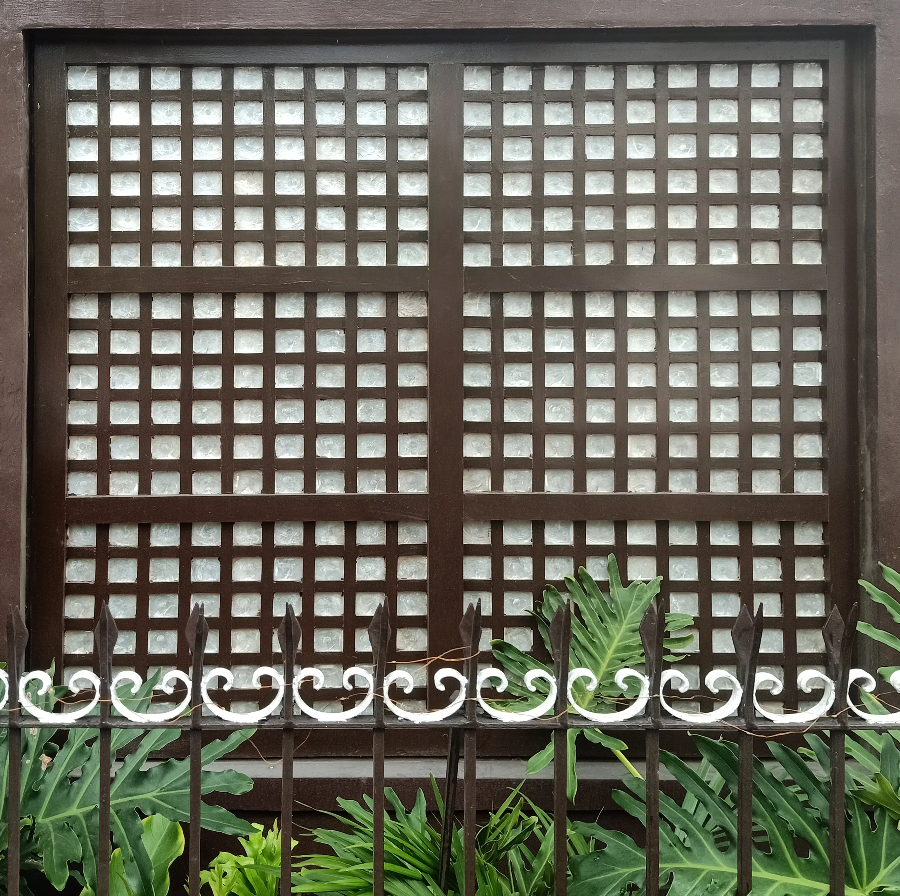
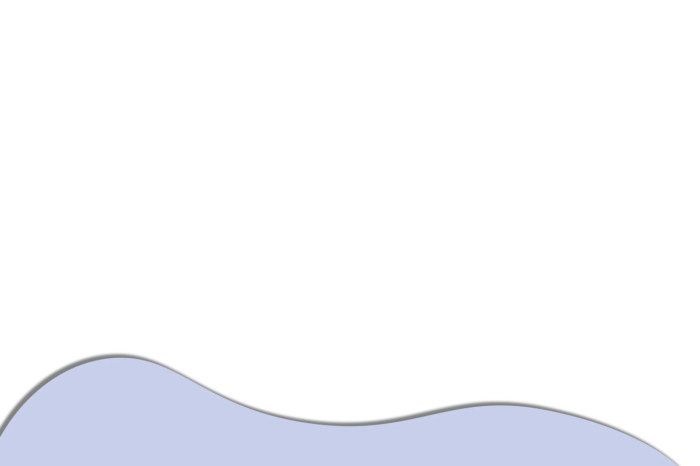
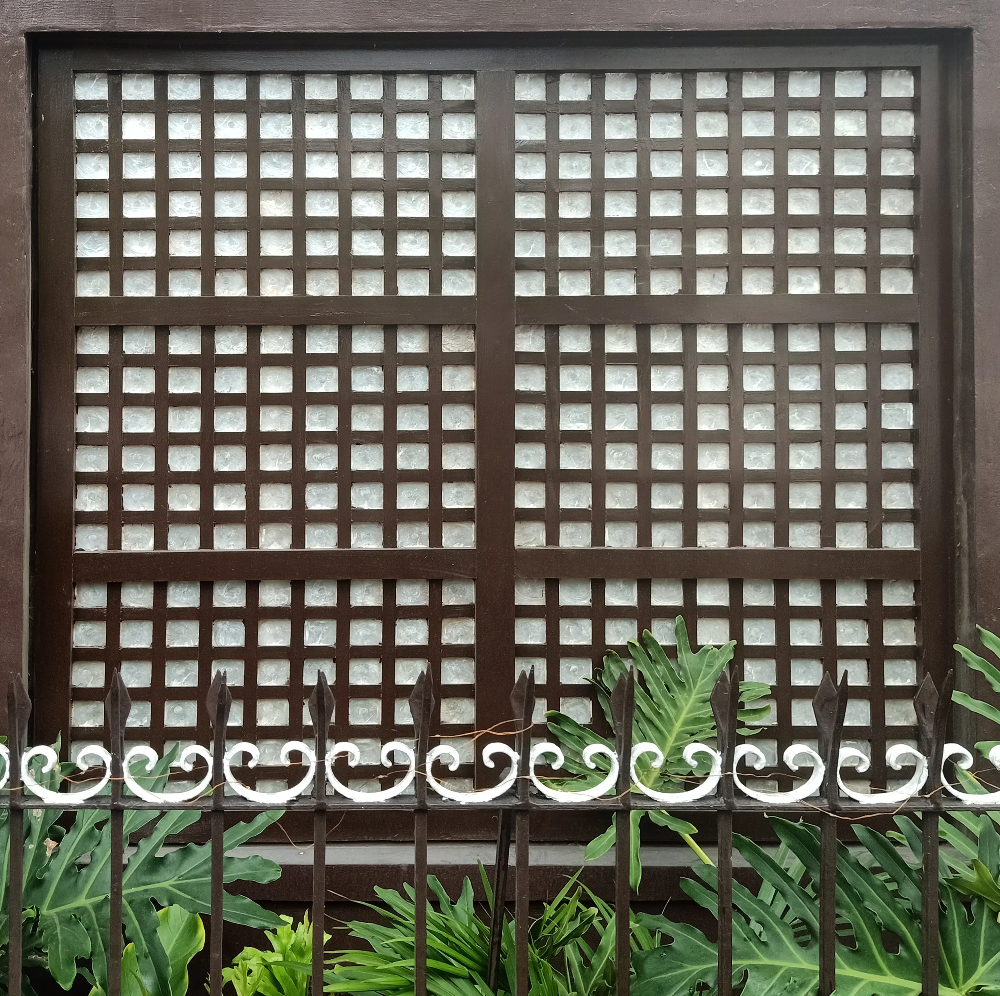

Escuela Pia in Taal is one of the oldest educational institutions in the country. This school was supervised by the church, which later became a school for disadvantaged youth of Taal.
This centuries-old Spanish edifice was built in 1885 through the efforts of P. Aniceto Aparicio. It is now an impressive architectural legacy that remains on the site of the Taal Town Plaza.
 Back   


